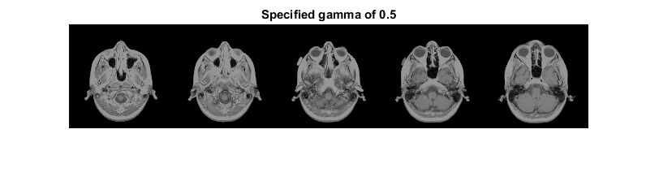

Contents
Syntax
J = IMADJUST3(I)
J = IMADJUST3(I, PERCENT)
J = IMADJUST3(I, [LOW_IN; HIGH_IN])
J = IMADJUST3(I, INLEVEL, [LOW_OUT; HIGH_OUT])
J = IMADJUST3(I, INLEVEL, [LOW_OUT; HIGH_OUT])
J = IMADJUST3(I, INLEVEL, [LOW_OUT; HIGH_OUT], GAMMA)
J = IMADJUST3(I, INLEVEL, [LOW_OUT; HIGHOUT], GAMMA, USESINGLE)
GPUARRAYB = IMADJUST3(GPUARRAYA, __)
Description
J = IMADJUST3(I) maps the intensity values in a N-D grayscale image I to new values in J such that 1% of data is saturated (Note that imadjust defaults to 2%). This increases the constrast of the output image J.
Examples
Adjust Contrast of a N-D Grayscale Image Read a low-contrast 4-D grayscale image into the workspace and display a montage of it.
vol = load(‘mri’);
montage(vol.D, ‘Indices’, 1:5, ‘Size’, [1, 5]);
title(‘Original image volume’);
Adjust the contrast of the image so that 1% of all voxels are saturared and display a montage of it.
volAdj = imadjust3(vol.D);
montage(volAdj, ‘Indices’, 1:5, ‘Size’, [1, 5]);
title(‘1% of voxels saturated’)
Adjust Contrast of a N-D Grayscale Image by Saturating a given Percentage of Image Elements. Read a low-contrast 4-D grayscale image into the workspace and display a montage of it.
vol = load(‘mri’);
montage(vol.D, ‘Indices’, 1:5, ‘Size’, [1, 5]);
title(‘Original image volume’);
Adjust the contrast of the image so that 0.1% of all voxels are saturared and display a montage of it.
volAdj = imadjust3(vol.D, 0.001);
montage(volAdj, ‘Indices’, 1:5, ‘Size’, [1, 5]);
title(‘0.1% of voxels saturated’)
Adjust Contrast of a N-D Grayscale Image specifying Contrast Limits Read a low-contrast 4-D grayscale image into the workspace and display a montage of it.
vol = load(‘mri’);
montage(vol.D, ‘Indices’, 1:5, ‘Size’, [1, 5]);
title(‘Original image volume’);
Adjust the contrast of the image, specifying contrast limits
volAdj = imadjust3(vol.D, [0.3 0.7]);
montage(volAdj, ‘Indices’, 1:5, ‘Size’, [1, 5]);
title(‘Specified contrast limits [0.3 0.7]’)
Adjust Contrast of a N-D Grayscale Image specifying non-linear Gamma Read a low-contrast 4-D grayscale image into the workspace and display a montage of it.
vol = load(‘mri’);
montage(vol.D, ‘Indices’, 1:5, ‘Size’, [1, 5]);
title(‘Original image volume’);

Adjust the contrast of the image, specifying a gamma value
volAdj = imadjust3(vol.D, [], [], 0.5);
montage(volAdj, ‘Indices’, 1:5, ‘Size’, [1, 5]);
title(‘Specified gamma of 0.5’);
Adjust Contrast of a N-D Grayscale Image Read a low-contrast 4-D grayscale image into a gpuArray and display a montage of it.
vol = load(‘mri’);
D = gpuArray(vol.D);
montage(gather(D), ‘Indices’, 1:5, ‘Size’, [1, 5]);
title(‘Original image volume’);

Adjust the contrast of the image so that 1% of all voxels are saturared and display a montage of it.
DAdj = imadjust3(D);
montage(gather(DAdj), ‘Indices’, 1:5, ‘Size’, [1, 5]);
title(‘1% of voxels saturated, computed on the GPU’)